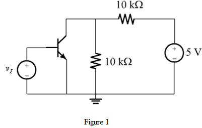

Determine the resistance,  .
.

The voltage gain of the transistor circuit shown in Figure 1 is,
.
Substitute  for
for  ,
,  for and
for and  for .
for .
Thus, the voltage gain of the transistor circuit is .
Refer to Figure P6.76 in the text book.
Draw the Thevenin’s equivalent circuit of the figure.

Determine the resistance, .
The voltage gain of the transistor circuit shown in Figure 1 is,
.
Substitute for , for and for .
Thus, the voltage gain of the transistor circuit is .